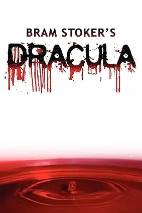

O Castelo de Otranto
Horace Walpole, 1764

Descubra os clássicos e contemporâneos do gênero gótico
Horace Walpole, 1764
Mary Shelley, 1818

Bram Stoker, 1897
Conhecida por suas histórias de vampiros e bruxas, incluindo "Entrevista com o Vampiro".
Explorar obrasAutor de "Coraline" e "Sandman", misturando elementos góticos com fantasia moderna.
Ver livrosAutora de "Mexican Gothic", trazendo uma nova perspectiva ao gênero gótico.
DescobrirParticipe de discussões mensais sobre clássicos e novos lançamentos da literatura gótica.